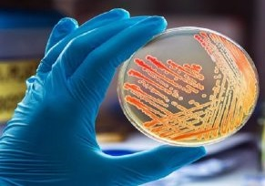

Le Nostre Aree di Specializzazione
Ematologia di Laboratorio
Immunometria
Biochimica Clinica
Esami del Sangue
Coagulazione
Intolleranze e Breath Test

Microbiologia e Parassitologia
Biologia Molecolare e Genetica